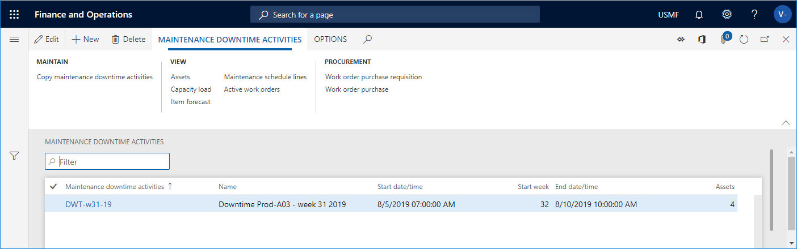
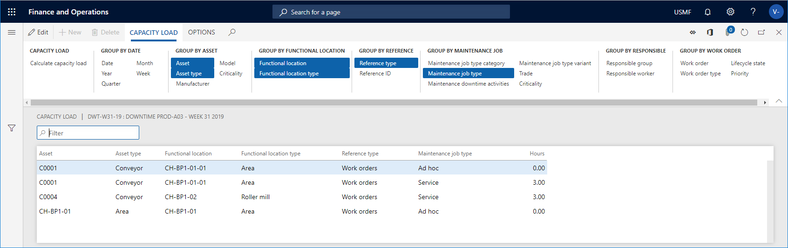
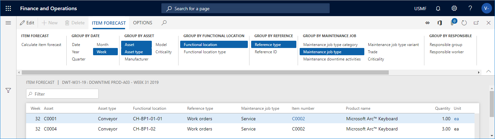

Wartungsausfallaktivitäten
Important
Dynamics 365 for Finance and Operations hat sich zu speziell entwickelten Anwendungen entwickelt, mit denen Sie bestimmte Geschäftsfunktionen verwalten können. Weitere Informationen zu diesen Änderungen finden Sie im Dynamics 365-Lizenzierungshandbuch.
Wartungsausfallzeiten dienen dazu, sich einen Überblick über die Kapazität zu verschaffen, die für die Durchführung von Wartungsarbeiten an bestimmten Anlagen in einem bestimmten Zeitraum erforderlich ist. Beispielsweise können Sie eine Instandhaltungsausfallregistrierung für die Produktionsposition 10 in der Produktionshalle 29-A auf der Produktionsstätte 02 anlegen. Die Registrierung von Wartungsausfallzeiten hat eine Start- und Endzeit, die den Zeitraum angibt, in dem die mit dem Wartungsausfall verbundenen Anlagen nicht für die Produktion verfügbar sind.
Wartungsausfallaktivitäten ist eine Übersicht über Wartungseinteilungen und Wartungsarbeiten an zugehörigen Anlagen in einem bestimmten Zeitraum. Die Zeilen, die sich auf Wartungsarbeiten im Arbeitsauftrag beziehen, haben alle ein voraussichtliches Startdatum innerhalb der Wartungsstoppperiode. Sie können nützliche Informationen extrahieren und Anpassungen an geplanten Wartungsarbeiten vornehmen:
- Verschaffen Sie sich einen Überblick über die erforderlichen Ausfallzeiten von Produktionsmitteln (Anlagen).
- Verschaffen Sie sich einen Überblick über die geplante Wartung (Stunden), gruppiert nach Kompetenzen (zuständige Wartungsarbeitergruppen oder Wartungspersonal), z.B. Kapazitätsbelastung von Elektrikern, Schmieden oder anderen Wartungsarbeitsgruppen, die für die Durchführung der geplanten Wartungsarbeiten erforderlich sind.
- Nehmen Sie Anpassungen an Wartungseinteilungen oder Wartungsaufträgen vor, die sich auf die Anlagen beziehen, z.B. ändern Sie die erwarteten Start- und Endzeiten auf einer Position oder wählen Sie andere Wartungsmitarbeiter aus, um den Workflow für Wartungsmitarbeiter und Wartungsarbeitergruppen zu optimieren.
Wenn Anlagen bei einer Ausfallregistrierung ausgewählt wurden, werden alle offenen Wartungseinteilungen und Wartungsaufträge, die sich auf aktive Arbeitsaufträge beziehen, in die Ausfallregistrierung der Instandhaltung einbezogen.
Wartungsausfallaktivitäten
Klicken Sie auf Anlagenmanagement > Allgemein > Wartungsausfallzeiten > Alle Wartungsausfallzeiten, um eine Liste aller Wartungsausfallzeiten zu öffnen und einige der mit den Aktivitäten verbundenen Informationen anzuzeigen. Klicken Sie auf einen Link in der Spalte Ausfallzeiten pflegen, um die Detailansicht zu öffnen. Die folgende Abbildung zeigt ein Beispiel der Liste Wartungsausfallaktivitäten.

Erstellen einer Wartungsausfallaktivität
Klicken Sie auf Anlagenmanagement > Allgemein > Wartungsausfallzeiten > Alle Wartungsausfallzeiten oder Aktive Wartungsausfallzeiten.
Klicken Sie auf Neu.
Geben Sie eine ID in das Feld Wartungsausfallzeiten und einen Namen in das Feld Name ein.
Geben Sie den Zeitraum für den Wartungsstopp in die Felder Startdatum/Uhrzeit und Enddatum/Uhrzeit ein.
Klicken Sie auf dem Wartungsausfallzeiten-Aktivitätsanlagen FastTab Zeile hinzufügen, um Anlagen einzeln zur Ausfallaktivität hinzuzufügen.
Klicken Sie auf Speichern, wenn alle Objekte hinzugefügt wurden. Die folgende Abbildung zeigt das Beispiel einer Wartungsausfallaktivität mit zugehörigen Anlagen und Wartungsaufträge angezeigt.
Die Wartungsaufträge und offenen Wartungseinteilungen, die sich auf die ausgewählten Anlagen beziehen, werden auf den Zeilen Ergebnis der Wartungsaufträge und Wartungseinteilungen FastTabs angezeigt. Im Feld Allgemein FastTab > Arbeitsaufträge Gruppe > Wartungsprognose Stunden Feld und Allgemein FastTab > Wartungsplan Gruppe > Wartungsprognose Stunden sehen Sie die Gesamtzahl der prognostizierten Stunden für Wartungsaufträge und Wartungseinteilungen.
Die folgende Abbildung zeigt ein Beispiel der Detailansicht Wartungsausfallaktivitäten.

Note
Die Wartungsaufträge und Wartungseinteilungen, die sich auf die ausgewählten Anlagen beziehen, werden automatisch aktualisiert, wenn neue Arbeitsaufträge oder Wartungseinteilungen angelegt werden, nachdem Sie die Wartungsausfallzeitaktivität angelegt haben. Wenn Sie z.B. zwei Tage nach dem Anlegen der Ausfallzeitaktivität Wartungspläne oder Wartungsrunden für die zugehörigen Anlagen terminieren, werden neue Wartungseinteilungen automatisch in die Ausfallzeitaktivität der Instandhaltung eingefügt.
In Alle Instandhaltungsausfallzeiten Aktivitäten > Wartungsausfallzeiten Aktivitäten wählen Sie eine Wartungsausfallzeit Aktivität in der Liste aus und klicken Sie auf Kapazitätsbelastung, um den Dialog Kapazitätsbelastung berechnen zu öffnen. Verwenden Sie diesen Dialog, um sich einen Überblick über die Kapazitätsauslastung zu verschaffen, z.B. Termine, Anlagen, Anlagentypen und Wartungsjobarten. Beachten Sie, dass die im Dialog angezeigten Daten die Start- und Enddaten sind, die unter Ausfallzeitaktivitäten pflegen ausgewählt wurden. Diese Berechnung beinhaltet die Anlagen im Zusammenhang mit der Ausfallzeitaktivität der Wartung.
Bearbeiten Sie im Dialog Kapazitätsbelastung berechnen bei Bedarf Start- und Endzeiten und wählen Sie aus, ob Sie Arbeitsaufträge und Wartungspläne in die Kalkulation einbeziehen möchten. Über das Feld Stufe können Sie festlegen, wie detailliert die Kapazitätsberechnung bezüglich Technischer Standort erfolgen soll. Wenn Sie z.B. die Zahl „1“ in das Feld einfügen und eine mehrstufige Struktur des Technischen Standortes haben, werden alle Anlagen eines Technischen Standortes, die bei der Ausfallzeitaktivität der Wartung ausgewählt werden, auf der obersten Ebene angezeigt, so dass die Stunden einer Zeile von untergeordneten Technischen Standorten aufsummiert werden können. Wenn Sie in das Feld Ebene die Zahl „0“ eingeben, erhalten Sie ein detailliertes Ergebnis, das alle Kapazitätsbelastungszeilen auf allen Ebenen des Technischen Standorts anzeigt, auf denen sie sich befinden.
Klicken Sie auf OK, um die Berechnung zu starten. Die Gesamtzahl der Stunden wird in der Übersicht Kapazitätsbelastung angezeigt. Klicken Sie auf der Registerkarte Kapazitätsbelastung > die Gruppen des Aktionsbereichs Gruppieren nach... auf die entsprechenden Schaltflächen, um einen detaillierteren Überblick über die Zuordnung der prognostizierten Stunden zu erhalten. In der folgende Abbildung wird die Ergebnisse einer Kapazitätsauslastung angezeigt.

Nachdem Sie sich einen Überblick über die Kapazitätsauslastung verschafft haben, kehren Sie, wenn Sie Anpassungen an Instandhaltungsaufträgen oder Wartungseinteilungen vornehmen möchten, zur Detailansicht Wartungsausfallzeitaktivitäten zurück und markieren Sie die zu korrigierenden Einteilungen auf den Seiten Ergebnisarbeitsaufträge Wartungsaufträge und Wartungseinteilungen FastTabs.
Klicken Sie auf die Schaltfläche Anpassen und aktualisieren Sie die erwarteten Start-/Endtermine, den Servicelevel oder die zuständigen Wartungsmitarbeiter für die ausgewählten Wartungsaufträge oder Wartungseinteilungen.
Klicken Sie auf OK, wenn Sie die erforderlichen Einstellungen vorgenommen haben.
Note
Wartungsaufträge und Wartungseinteilungen, die nach den Anpassungen nicht in die Wartungsausfallzeit einbezogen sind, werden automatisch aus Wartungsausfallaktivitäten entfernt.
Unter Alle Wartungsausfallaktivitäten > Wartungsausfallaktivitäten > Wählen Sie eine Wartungsausfallaktivität in der Liste aus und klicken Sie auf Einzelteilprognose, um den Dialog Positionsprognose berechnen zu öffnen. In diesem Dialog können Sie Prognosen für Artikel (Ersatzteile und andere benötigte Artikel) berechnen und gruppieren, um sich einen Überblick zu verschaffen, z.B. nach Datum, Anlage, Anlagentyp und Wartungsjobart. Beachten Sie, dass die im Dialog angezeigten Daten die Start- und Enddaten sind, die unter Ausfallzeitaktivitäten pflegen ausgewählt wurden. Diese Kalkulation umfasst Ersatzteile und Positionen, die sich auf die Anlagen beziehen, die bei der Wartungsausfallaktivität ausgewählt werden.
Bearbeiten Sie im Dialog Positionsprognose berechnen bei Bedarf Start- und Endzeiten und wählen Sie aus, ob Sie Arbeitsaufträge und Wartungspläne in die Kalkulation einbeziehen möchten. Über das Feld Stufe können Sie festlegen, wie detailliert die Kapazitätsberechnung bezüglich Technischer Standort erfolgen soll. Wenn Sie z.B. die Zahl „1“ in das Feld einfügen und eine mehrstufige Struktur des Technischen Standortes haben, werden alle Anlagen eines Technischen Standortes, die bei der Ausfallzeitaktivität der Wartung ausgewählt werden, auf der obersten Ebene angezeigt, so dass die Stunden einer Zeile von untergeordneten Technischen Standorten aufsummiert werden können. Wenn Sie in das Feld Ebene die Zahl „0“ eingeben, erhalten Sie ein detailliertes Ergebnis, das alle Kapazitätsbelastungszeilen auf allen Ebenen des Technischen Standorts anzeigt, auf denen sie sich befinden.
Klicken Sie auf OK, um die Berechnung zu starten. Die Gesamtzahl der Positionsprognosen wird in der Übersicht Positionsprognose angezeigt. Klicken Sie auf der Registerkarte Einzelteilprognose > die Gruppen des Aktionsbereichs Gruppieren nach... auf die entsprechenden Schaltflächen, um einen detaillierteren Überblick über die Zuordnung der prognostizierten Elemente zu erhalten. Die folgende Abbildung zeigt die Ergebnisse einer Berechnung für Artikelplanung.

- Sie können Anlagen von einer Wartungsausfallaktivität in eine andere kopieren. Wählen Sie unter Alle Wartungsausfallaktivitäten die Schaltfläche Wartungsausfallzeiten kopieren und treffen Sie Ihre Auswahl in den Feldern Wartungsausfallzeiten und Wartungsausfallzeiten, und klicken Sie auf OK.
- Klicken Sie unter Alle Wartungsausfallzeiten auf die Schaltfläche Wartungseinteilungen oder die Schaltfläche Aktive Arbeitsaufträge, um die zugehörigen Listen zu öffnen und die Zeilen anzuzeigen, die sich auf die ausgewählte IWartungsausfallzeitaktivität beziehen.